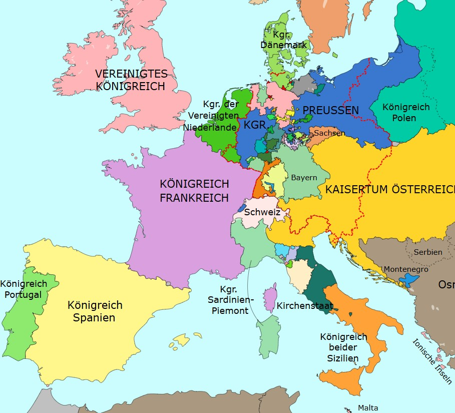

Inicio
¿Por qué Europa se lanzó al océano?
En el siglo XV Europa necesitaba riqueza, nuevas rutas y mejores herramientas de navegación. Esas necesidades impulsaron exploraciones que cambiaron la historia del mundo.
💰 Riqueza
🧭 Tecnología
⚔️ Poder